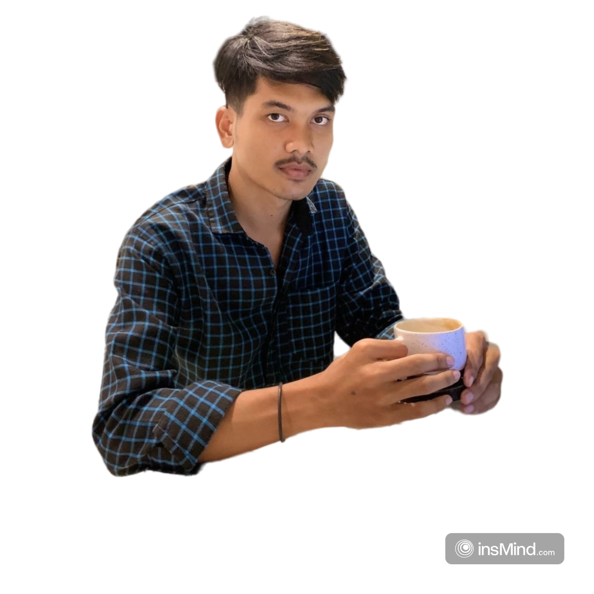

Danda Mandala
Home
About
Technologi
Project
Prestasi Me
Contact Me
Hii 👋, My Name is
Danda Mandala
UI/UX Developer | Design Graphic.
Designing Digital Experiences with Purpose and Precision.
Instagram
